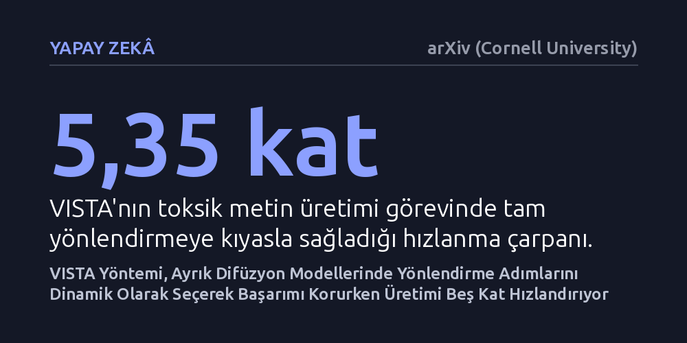

YAPAY-ZEKA · arXiv (Cornell University) · 2026-10-18
Ayrık difüzyon modellerinde hesaplama maliyeti yüksek olan yönlendirme adımlarını performansı koruyarak seyreltmenin yolu araştırıldı. Geliştirilen VISTA yöntemi, en kritik adımları dinamik programlamayla seçerek el yapımı çizelgeleri geride bıraktı ve üretimi beş kattan fazla hızlandırdı.
Üretken yapay zekanın hedefe uygun çıktı üretmesinde her adımda pahalı denetimler yapma zorunluluğunu ortadan kaldırarak yüksek hesaplama maliyetini kökten düşürür.

Ayrık difüzyon modelleri; metin yazma, protein veya DNA gibi biyolojik dizileri tasarlama ve görsel üretme gibi alanlarda son dönemin en dikkat çeken üretken yapay zeka yaklaşımları arasında yer alıyor. Bu modeller, tamamen rastgele gürültüden başlayarak adım adım anlamlı ve yapılandırılmış içerikler inşa ediyor. Ancak üretilen sonucun belirli bir amaca, güvenlik kuralına veya istenen biyolojik işleve uymasını sağlamak için sürecin dışarıdan bir ödül mekanizmasıyla yönlendirilmesi gerekiyor. Sıralı Monte Carlo (SMC) adı verilen yönlendirme tekniği, her aşamada olası adayları puanlayıp en iyilerini seçerek modelin hedefe sadık kalmasını sağlıyor.
Ne var ki bu yönlendirmenin hesaplama maliyeti olağanüstü derecede yüksek. Her gürültü giderme adımında ek ödül değerlendirmeleri ve yön türevi hesaplamaları yapmak, üretim süresini saniyelerden dakikalara fırlatıyor. Araştırmacılar bu darboğazı aşmak için yönlendirmeyi her adımda değil, yalnızca belirli aralıklarla uygulamayı deniyor. Ancak hangi adımların seçileceğine dair bugüne kadar kullanılan el tasarımı sabit kurallar, farklı görevlerde tutarsız sonuçlar veriyor ve çoğunlukla ciddi kalite kayıplarına yol açıyor.
Bu sorunun üstesinden gelmek isteyen araştırmacılar, ek bir model eğitimi gerektirmeyen VISTA adını verdikleri bir yöntem önerdi. Yöntemin temel yaklaşımı, her adımda yönlendirme yapılan ideal üretim yolunu, belirlenen kısıtlı bir hesaplama bütçesi dahilinde en az sapmayla taklit etmeye dayanıyor. Araştırma ekibi, ideal yol ile adımları seyreltilmiş yol arasındaki farkın matematiksel bir üst sınırını türeterek optimize edilebilir somut bir hedef oluşturdu.
VISTA, zamanlama çizelgesini belirlemek için başlangıçta tam yönlendirmeyle yürütülen az sayıdaki ısınma üretiminden değer istatistikleri topluyor. Bu ısınma aşamasında üretilen çıktılar boşa gitmeyip doğrudan nihai model ürünleri olarak korunabiliyor. Elde edilen istatistikler hangi zaman adımlarının yönlendirme açısından vazgeçilmez olduğunu gösteriyor ve dinamik programlama algoritması sayesinde hedefe en uygun zamanlama tablosu kesin olarak çözülüyor. Zamanlama bir kez seçildikten sonraki tüm üretimlerde ise fazladan hiçbir ek hesaplama yükü ortaya çıkmıyor.
Araştırmacılar VISTA'yı metin üretimi, biyolojik dizi tasarımı ve görüntü oluşturma olmak üzere üç farklı alanda kapsamlı deneylerle test etti. Deney sonuçları, VISTA'nın her görev için o görevin kendine has dinamiklerine uygun farklı zamanlama çizelgeleri keşfettiğini ortaya koydu. Elle tasarlanmış klasik seyrek çizelgelerle karşılaştırıldığında VISTA, test edilen senaryoların neredeyse tamamında belirgin bir üstünlük sağladı.
Özellikle metin üretimi deneyinde elde edilen sonuçlar dikkat çekici bir tablo ortaya koydu. Yönlendirmenin her adımda eksiksiz uygulandığı sistemde 1,00 olan özgün hedef oranı, VISTA ile 0,99 seviyesinde neredeyse tamamen korundu. Buna karşılık, üretim başına harcanan işlem süresi 204,23 saniyeden 38,16 saniyeye geriledi. Bu da hedef başarımından taviz vermeden tek bir üretimde 5,35 katlık bir hızlanma elde edildiği anlamına geliyor.
Elde edilen bulgular, difüzyon modellerinde hız ve kalite arasındaki dengenin sezgisel tahminlerle değil, göreve özel istatistiksel verilerle kurulabileceğini gösteriyor. Hesaplama kaynaklarının kısıtlı olduğu gerçek dünya uygulamalarında, özellikle biyolojik molekül tasarımı gibi hassas alanlarda yönlendirme maliyetlerinin düşmesi ciddi bir verimlilik sağlıyor. Sistemin ek model eğitimi gerektirmemesi de mevcut üretken yapay zeka altyapılarına hızla entegre edilebilmesini mümkün kılıyor.
Bununla birlikte yöntemin başarısı, ilk ısınma aşamasında toplanan istatistiklerin hedef görevi ne kadar iyi temsil ettiğine doğrudan bağlı. Ayrıca bu bulgular henüz bağımsız bilim insanlarının hakem denetiminden geçmemiş bir önbaskı çalışmasına dayanıyor. Çok daha büyük ölçekli modellerde ve daha karmaşık yönlendirme senaryolarında yöntemin başarısını ne ölçüde sürdüreceği ilerleyen çalışmalarla daha net anlaşılacaktır.